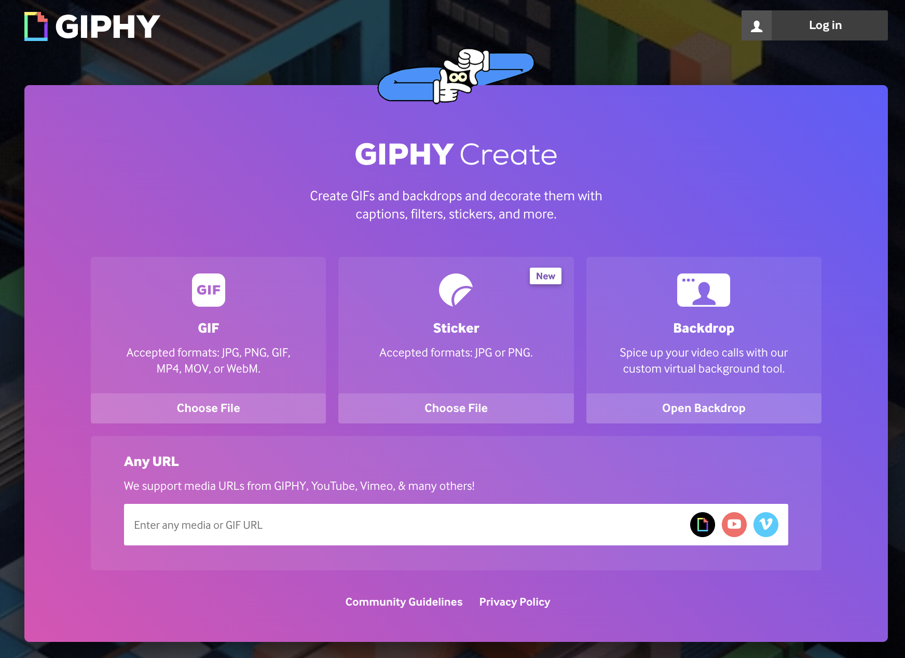
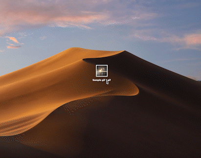
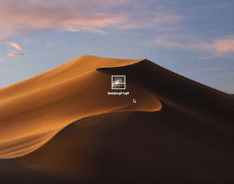

GIFs are basically everywhere. You can easily find it in social media, like Facebook and Instagram, or in instant messaging apps such as WhatsApp, Telegram. Recently, Instagram is trying to introduce a function in which users can comment with GIFs, hyping up its users. Even though it’s easy to access with GIFs, do you think you really know what GIF is? In the following paragraph, we will introduce you basic information about GIFs, and most excitingly, WAYS TO CREATE YOUR OWN GIF! Spend a few minutes and read on!
What is a GIF?
Name: Graphical Interchange Format, in short GIF
Invented in 1987, by Steve Wilhite, a US software writer
A series of images or a soundless video that loop infinitely if no one stops. No pressing of a play button is needed
GIF is a bitmap image format, so it is classified as an image format, rather than video
How can GIFs move?
GIFs are several images of frames that are combined into a single file. They are being displayed one after one with different frame rates in order to create short low-file-size animations.
An example of GIF that is combined with two images
An example of GIF that is converted from a soundless video
(Source from the internet)
How is GIF better than the other image formats?
GIF works like a video that supports animation. Something moving is definitely easier to grab attention than just a still image.
GIF is a ‘lossless’ format, which can compress without quality loss, while photo formats like PNG and JPEG files compress the image by removing unnecessary metadata.
How is GIF worse than the other image formats?
GIFs have a worse quality when displaying still pictures than other photo formats and it takes up more space. So it is better to use photo formats when displaying still pictures.
GIFs can support up to 256 colours, which display relatively less colour than other image formats.
How to create GIFs?
Convert video to GIFs
Online converters can be easily found on the internet. Here are some of the examples which enable users to upload files and convert them into GIFs. Click the button under the photo to directly link to those websites!

Convert live photos to GIFs (iPhone)
Here are steps to convert live photos to GIFs:
Tap into a live photo in your album
Tap the “LIVE” button in the top left corner
Select “LOOP” or “BOUNCE” for different animation effect
Here comes your own GIF!
Example of turning a live photo to a GIF by using the LOOP function
Example of turning a live photo to a GIF by using the BOUNCE function
How to read GIF files on a desktop?
For Windows
Simply double click the gif file
For Mac
Method 1: Press the spacebar
Tab the gif file that you would like to open, and press spacebar

Method 2: Open with browser
Tab the gif file that you would like to open. Right click, choose open with a browser (E.g. Safari, Google Chrome)

Now you have fully mastered the background of GIFs, ways to create GIFs, and ways to open a GIF file in both Mac and Windows.
Interested in knowing more about different image formats? Don’t forget to check out the other pages on this website [JPG][PNG] [BMP] or take a quiz to test yourself if you have read all introductions of image format!
[Test Yourself]